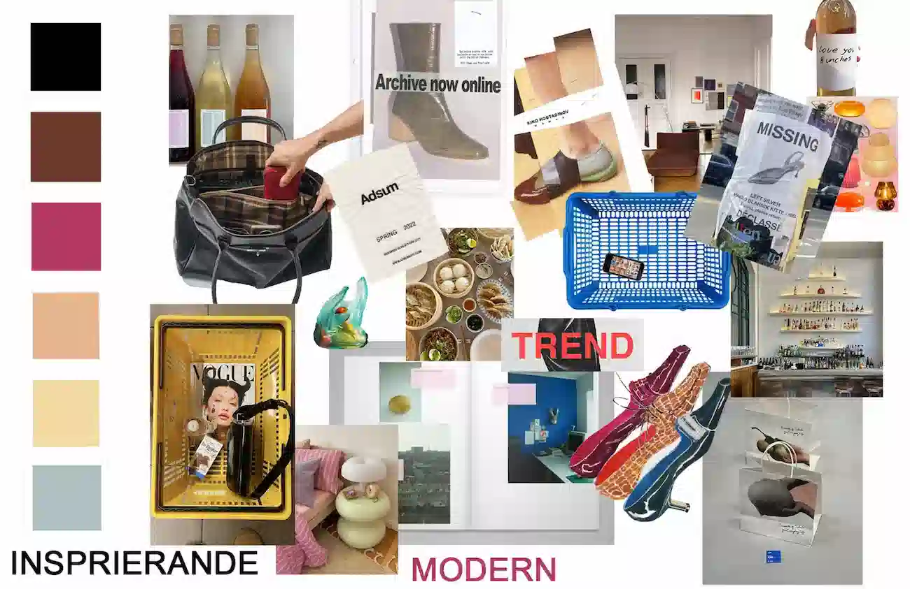
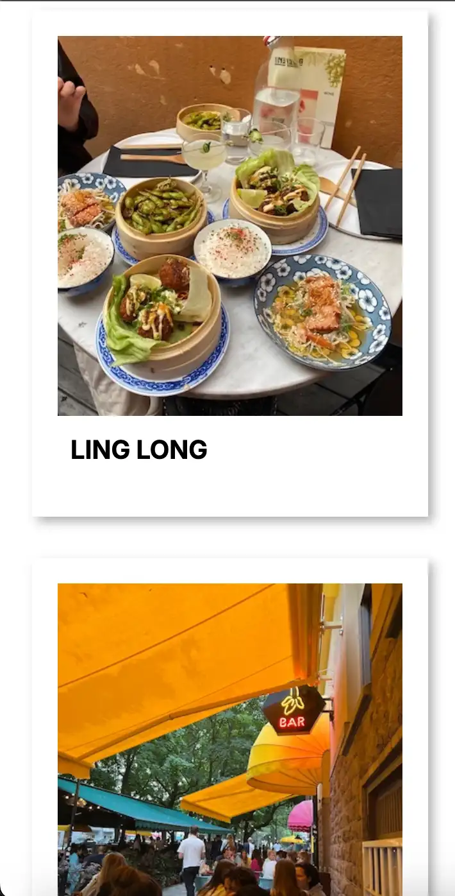
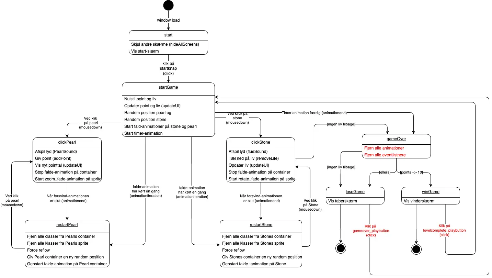
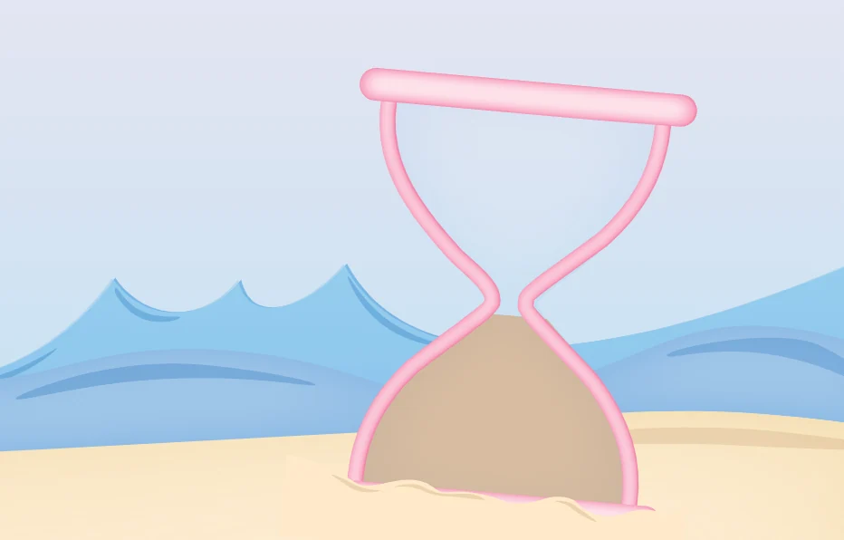
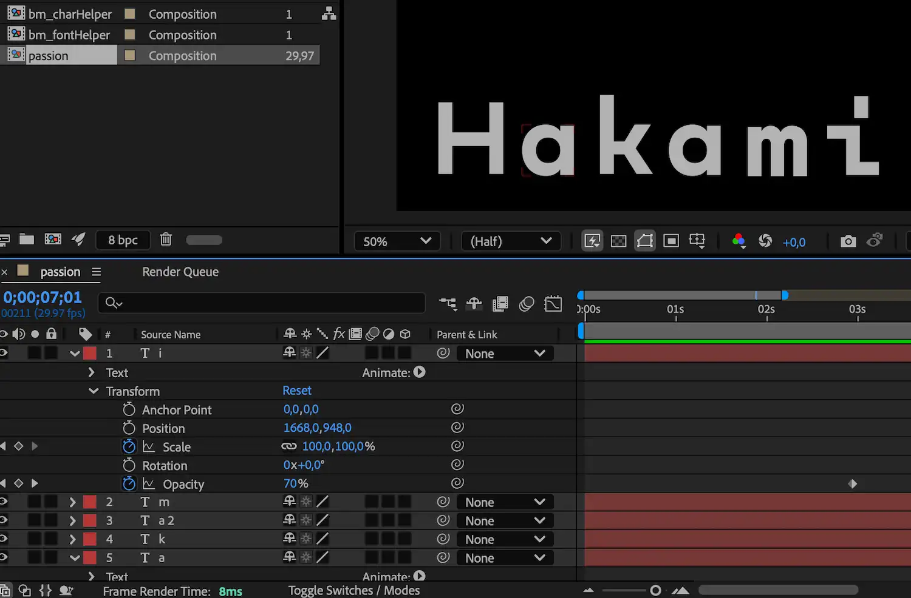
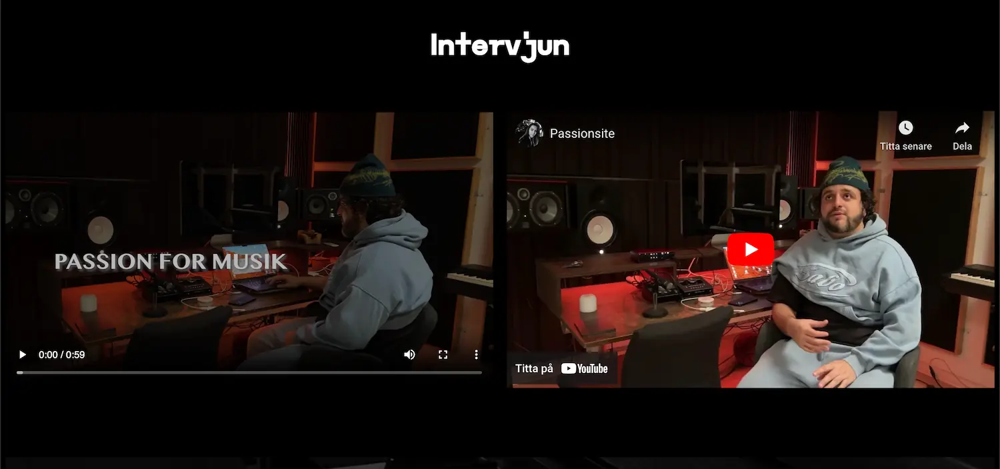
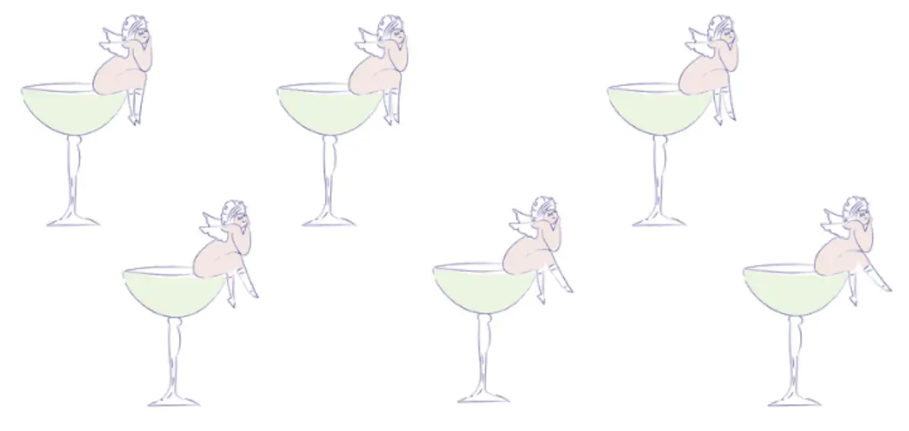
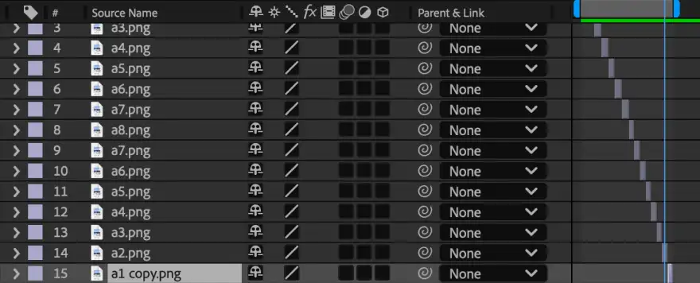
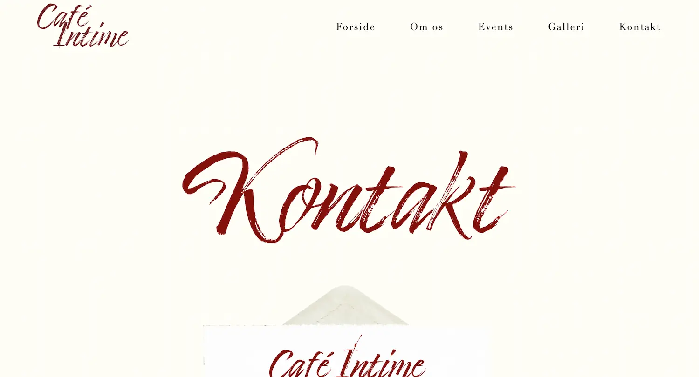

Presentationskort & film
Under tema 1 fick jag grundläggande kunskaper i Figma genom arbetet med presentationskortet. Jag lärde mig att använda verktyget för att skapa och designa visuellt tilltalande material och fick en inblick i hur digitala verktyg kan användas för att effektivt presentera idéer.
Arbetet med vårt filmprojekt gav mig ytterligare lärdomar, särskilt kring projektplanering och idéutveckling. Jag insåg vikten av tydliga tidsramar för att strukturera idéutvecklingen och hur avsatt tid för brainstorming effektivt genererar och utvecklar idéer.
Jag tränade på att arbeta i grupp, fördela uppgifter och kommunicera tydligt för att nå gemensamma mål. Denna erfarenhet har stärkt min förståelse för vikten av planering och samordning, vilket jag fortsatt tillämpat i senare projekt.
Jag har tagit med mig viktiga insikter och sätt att arbeta från tema 1, som hur man använder en storyboard, effektiv brainstorming inom specifika tidsramar och vikten av att hålla sig till tidsplaner och tydlig planering. Dessa färdigheter har inte bara varit användbara i detta tema utan jag har aktivt använt dem i de kommande projekten för att strukturera och effektivisera arbetsprocesserna. Detta la exempelvis en tydlig och bra grund för vår planering under tema 5.2 när vi strukturerade arbetet och tidsplaneringen i vår Trello-board.


Studiestartsprov
Under tema 2, i samband med studiestartsprovet, fick jag lära mig grunderna i HTML och CSS, vilket gav mig en tydlig förståelse för hur man bygger och designar webbsidor. Jag lärde mig att använda HTML för att strukturera innehåll genom olika element som rubriker, stycken, bilder och länkar. Med CSS fick jag möjlighet att styla dessa element, exempelvis genom att ändra färger, typsnitt, marginaler och placeringar för att skapa en mer visuellt tilltalande
En värdefull del var att arbeta med CSS Grid, som gjorde det möjligt att skapa responsiva layouter genom att dela upp sidor i rader och kolumner. Jag lärde mig placera element precist och anpassa designen till olika skärmstorlekar, vilket är avgörande i modern webbutveckling.
Jag fick erfarenhet av att kombinera HTML och CSS för att skapa en helhet, från grundstruktur till designprinciper som förbättrar användarupplevelsen. Tema 2 gav mig en solid grund inom webbutveckling som jag fått anvädning av i alla mina kommande projekt under terminen och inspirerade mig att utforska ämnet vidare.
Klicka här för att besöka siten.
Grundläggande UX/UI
I tema 3 fick jag möjlighet att utveckla de kunskaper inom kodning jag tagit med mig från tema 2. Jag lärde mig vikten av att koden och designen följer UX-konventioner som visuell hierarki, tydliga CTA-knappar, logon som hemknapp och en synlig, enkel meny.
Jag skapade min Stockholmsguide för unga kvinnor och genomförde en researchprocess med metoder som deskresearch, intervju, observation och skapande av user stories. Denna research hjälpte mig att anpassa innehållet för målgruppen och skapa en tilltalande design.
I designfasen använde jag de lärda konventionerna och implementerade dem i Figma genom skiss, wireframe och en klickbar prototyp.
Prototypen testades med användartester som 5-sekunderstest och tänk-högt-test. Feedbacken hjälpte mig att iterera och förbättra användarflödet.
En snabb prestanda var något jag under research-processen insåg var mycket viktigt för min målgrupp och jag optimerade därför alla bilder genom att komprimera dem för att förbättra laddningstider och användarupplevelse. Detta är även något som jag fortsatt göra i alla kommande projekt.
Tema 3 gav mig möjlighet att vidareutveckla mina design- och kodningskunskaper och stärkte min förståelse för att skapa en användarcentrerad och funktionell webbplats genom research, design och tekniska lösningar.
Klicka här för att besöka siten.
- 


- 

Animation av spel
I tema 4 lärde jag mig grunderna i Adobe Illustrator, JavaScript och CSS-animation. Det var därefter utifrån denna kunskap byggde jag upp mitt spel. Som grund skapade jag en spel-pitch och designade en skiss samt byggde en pappersprototyp för att testa spelets flöde och funktioner.
Genom det jag lärt mig om designstilar inom spel teckande jag sedan spelets grafiska element i Illustrator som vektorbilder. De exporterades som SVG-bilder för att kunna manipuleras och animeras med hjälp av CSS och JavaScript.
Med CSS-animation och JavaScript implementerade jag de tekniker jag lärt mig för att skapa spelets interaktivitet och animationer. Jag använde JavaScript-funktioner som setInterval, addEventListener och functions för att registrera spelarens handlingar, som när figurer föll eller reagerade på klick.
Aktivitetsdiagrammet jag skapade gav mig en grund för att koda JavaScript. Diagrammet hjälpte mig att visualisera spelets flöde och logik, vilket gjorde det enklare att implementera funktioner för poäng, liv och tid.
Jag tog med mig de tester och UX-konventioner jag lärt mig i tema 3 och implementerade dem i spelet och designprocessen. Genom att använda principer som visuell hierarki och interaktiva element förbättrade jag användarupplevelsen och gjorde spelet både funktionellt och estetiskt tilltalande.
Genom projektet fick jag en grundläggande förståelse för både Illustrator och JavaScript och lärde mig hur dessa verktyg kan kombineras för att skapa en interaktiv och visuellt tilltalande spelupplevelse och webbdesign.
Klicka här för att besöka siten.

- 
- 
- 


- 

Passionsite med Hakami
Under tema 5.1 lärde jag mig att klippa i Adobe Premiere Pro, skapa Lottie-effekter i After Effects och använda och utveckla mina intervjukunskaper från researchprocessen i tema 3. Jag lärde mig att hålla en intervju, filma och spela in ljud på ett professionellt sätt, samt att utveckla en webbplats baserat på intervjun och personen.
I mitt projekt om artisten Hakami kombinerade jag webbutveckling och videoproduktion för att skapa en helhetsupplevelse som speglade hans konstnärliga uttryck. Hemsidan designades för att vara användarvänlig och visuellt tilltalande, med en Lottie-animation i hero-sektionen som gav sidan liv och rörelse, vilket harmoniserade med Hakamis stil. Jag valde webfonter noggrant för att skapa en enhetlig visuell upplevelse.
Videoprojektet gav mig möjlighet att utveckla mina intervju- och filmkunskaper. Genom att göra en film-storyboard som vi lärt oss under tema 1 och följa en fem-shot-sequence-modell skapade jag en video som fångade Hakamis passion och kreativitet. Jag lärde mig vikten av att ställa öppna frågor och skapa en avslappnad atmosfär för att få fram autentiska svar, samt att bra ljudkvalitet och planering är avgörande för en högkvalitativ inspelning.
Att kombinera dessa delar gav mig en djupare förståelse för hur design och innehåll samverkar för att skapa en engagerande helhetsupplevelse, och stärkte mina färdigheter inom både webbutveckling och intervjuer.
Klicka här för att besöka siten.
Verksamhetssite
Under tema 5.2 arbetade vi i grupp, en färdighet jag nu utvecklat vidare från tema 1. I vårt grupparbete gjorde vi en redesign av Café Intimes hemsida, där vi fokuserade på att skapa en användarvänlig upplevelse som speglar barens atmosfär och historia.
Under arbetet fick jag chans att använda de kunskaper jag lärt mig i tidigare teman, som UX/UI-designprinciper och test, innehållsskapande med Illustrator och After Effects, samt kodning med JavaScript, CSS och HTML. Vi applicerade researchkunskaper från tema 3 för att analysera företagets varumärke, målgrupp och nuvarande webbplats. Detta gav mig en djupare förståelse för hur olika tekniker och designprinciper samverkar för att skapa en effektiv och visuellt tilltalande webbplats.
Jag var delaktig i hela processen, från idéutveckling till teknisk implementation. Jag skapade en digital prototyp i Figma och innehåll som text, bilder och Lottie-animation. Vid mitt skapande av Lottie-filen använde jag kunskaper i Illustrator från tema 4 samt Lottie och After Effects från tema 5.1. Jag var också delaktig i kodningen och säkerställde bl.a. att siten var responsiv och visuell med UX-konventioner och design principer som vi lärt oss under tema 3 så som logotyp som hemknapp och en hamburgermeny i mobilvy.
Under arbetets gång stötte vi på tekniska hinder, främst med GitHub, vilket fördröjde vårt arbete. Trots detta är jag nöjd med resultatet. Hemsidan reflekterar barens stil och historia och är användarvänlig.
Klicka här för att besöka siten.
- 
- 

- 